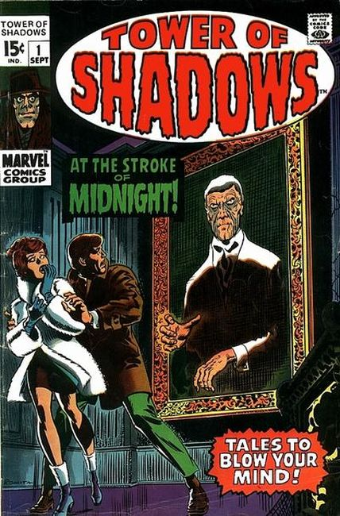

Series: 9 issues 1969 - 1971
Cover by John Romita
Publisher: Marvel
All new stories.
- "At the Stroke of Midnight!", script and art by Jim Steranko; Lou and Marie search the Mansion Lou inherited from the uncle he killed for the treasure they know he had.
- "From Beyond the Brink," script by Johnny Craig, art by Johnny Craig and John Romita (alterations); Arthur follows Mr. Hathaway around in an attempt to write his biography; He cannot figure out why Mr. Hathaway is so passionate about debunking seances.
- "A Time to Die," script by Stan Lee, pencils by John Buscema, inks by Don Heck; Sebastian Scrogg has been trying to create a potion of immortality for years; He shelters a fugitive, Arthur, because he will have to put up with whatever he makes him do, and however he treats him.